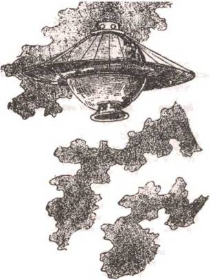
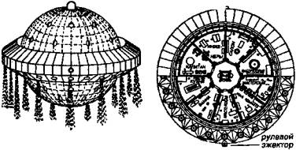
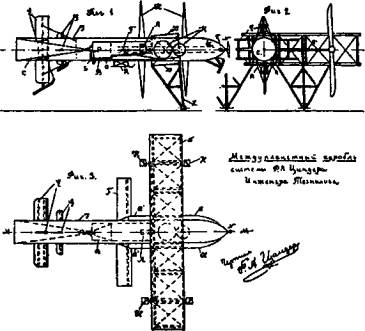
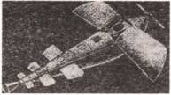

Время фантазеров и мечтателей
Как только где-нибудь в компании начинаются разговоры об истоках отечественной космонавтики, тут же всплывают имена Кибальчича, Циолковского, Цандера, Кондратюка…
И хотя история, как известно, не терпит сослагательного наклонения, давайте спокойно разберемся, кто что сделал и кто, напротив, ничего не сделал.
ВОТ ТАКАЯ ПЛАТФОРМА! Когда мне еще в детстве на глаза первый раз попался рассказ о том, как народоволец Кибальчич в 1881 году создавал свой «воздухоплавательный прибор», я был потрясен. Человек с петлей на шее думал не о завтрашнем дне, когда его повесят, а о послезавтрашнем, когда люди отправятся в космос.
Слов нет, жалко талант, погибший в самом расцвете сил. (Хотя, если разбираться по сути, Николаю Кибальчичу при любом режиме полагалось бы достаточно строгое наказание. Представьте себе, что вы завтра прочтете в газетах: арестован член группы террористов из шести человек, изготовивший взрывное устройство, которое было использовано для покушения на президента. Как вы думаете, что с ним сделают?…)
Теперь о сути изобретения. Согласно описанию Кибальчича, «воздухоплавательный прибор» имел вид платформы с отверстием в центре. Над ним устанавливалась цилиндрическая «взрывная камера», в которую должны были подаваться «свечки» из прессованного пороха. Для их зажигания и подачи без перерыва автор предлагал сконструировать особые «автоматические механизмы». Но что они должны собой представлять — об этом ни гугу. Нет также ни слова об устройстве герметичной кабины, средствах защиты и безопасности экипажа и т. д.

Так некогда представляли себе космический корабль селенитов фантасты Фор и Графиньи. Как видите, современные уфологи по части «летающих тарелок» от них недалеко ушли.

«Мировой» корабль по проекту Улинского.
Словом, перед нами типичный «прожект», какими и ныне полным-полны редакционные корзины в любом научно-популярном журнале.
Идея Кибальчича даже не сыграла никакой роли, поскольку листки с описанием проекта были подшиты к делу и оказались обнародованными лишь спустя 36 лет — в августе 1917 года. Словно бы специально для того, чтобы большевики могли использовать этот случай как очередной пример для обличения царского режима. Вот, дескать, какого человека угробили…
БЕЗ КОГО НАРОД НЕПОЛНЫЙ… Между тем слышали ли вы, например, о реактивном дирижабле Соковнина, о летательных аппаратах Неждановского, атомной (!) ракете Александра Федорова?… Эти имена у нас почему-то известны куда меньше. А ведь первые двое — Соковнин и Неждановский — были явными предшественниками Кибальчича. Что же касается Федорова, то он, по существу, оказался прямым конкурентом К. Э. Циолковского.
А знаем мы о них мало и по сей день, наверное, потому, что в советское время было невыгодно пропагандировать идеи капитана первого ранга Николая Михайловича Соковнина — как-никак офицер царской армии. Хотя его конструкция, опубликованная в 1866 году, была проработана куда лучше «воздухоплавательного прибора». Соковнин предлагал взять дирижабль и поставить на него… реактивный двигатель! Причем если поначалу автор предлагал оснастить свой летательный аппарат пороховыми ракетами, то впоследствии додумался и до идеи… турбореактивного двигателя.
Другой русский ученый-изобретатель — Сергей Сергеевич Неждановский — впервые пришел к мысли создания реактивного летательного аппарата в июне 1880 года, о чем свидетельствует запись в его рабочей тетради.
Полгода спустя он уже привел расчеты двух вариантов ракетного двигателя (при давлении пороховых газов в 150 и 200 атмосфер) и прямо писал: «Думаю, что можно и не мешает устроить летательный аппарат. Он сможет носить человека по воздуху по крайней мере в продолжение 5 минут…»
В общем, человек уже в то время придумал ранцевый реактивный двигатель, который в натуре был воссоздан лишь в 70-е годы XX века американцами.
О жизни еще одного российского гения — Александра Петровича Федорова — и по сей день мало что известно. Однако его труд «Новый принцип воздухоплавания, исключающий атмосферу как опорную среду» был опубликован в 1896 году. И не в заштатной Калуге, а в Петербурге, где был замечен и породил своеобразную лавину работ подражателей.
Именно на эту книжку, кстати, опирался и К Э. Циолковский, который прямо пишет: «В 1896 году я выписал книжку А. П. Федорова „Новый принцип воздухоплавания…“. Она мне показалось неясной (так как расчетов никаких не дано). А в таких случаях я принимаюсь за вычисления самостоятельно — с азов. Вот начало моих теоретических изысканий о возможности применения реактивных приборов в космических путешествиях».
РАКЕТНЫЕ ПОЕЗДА ЦИОЛКОВСКОГО. Кстати, в текстах самого Циолковского ясности не намного больше, и продраться сквозь частокол его словонагромождений бывает не так-то просто.
Ясно одно — Константин Эдуардович либо на свой лад развивал идеи своих предшественников, либо выдвигал нечто совершенно неудобоваримое. У нас, например, долгое время как-то не принято даже упоминать о том, что, кроме всего прочего, Циолковский был активным пропагандистом чистки генофонда человечества, предлагая для этого методы, которые наверное, произвели бы впечатление на самого Гитлера.
О таком Циолковском постарались забыть даже большевики. И мы с вами дальше тоже будем говорить лишь о его космических идеях. Большая часть их относится к общим рассуждениям типа «если попробовать сделать так, то, наверное, получится следующее».
Среди выдвинутых им технических идей нашли практическое применение, пожалуй, лишь многоступенчатые ракеты. Да и то ведь он предлагал два варианта: ракетные эскадрильи и поезда.
Эскадрильи, когда ракеты стыкуются в одну шеренгу параллельно одна другой, может быть, когда-то будут использованы для передвижения буксиров в открытом космосе.
Что же касается идеи ракетного поезда, то она реализована с точностью до наоборот. Вот как описывает суть дела сам Циолковский: «Дело происходит приблизительно так. Поезд, положим, из пяти ракет скользит по дороге в несколько сот верст длиною, поднимаясь на 4–8 верст от уровня океана. Когда передняя ракета почти сожжет свое горючее, она отцепляется от четырех задних. Эти продолжают двигаться с разбегу (по инерции), передняя же уходит от задних вследствие продолжающегося, хотя и ослабленного взрывания. Управляющий ею направляет ее в сторону, не мешая движению оставшихся сцепленными четырех ракет».
В общем, как видите, нет ничего и близкого к современной практике. Ракеты ныне стартуют не горизонтально, по эстакадам, как предлагал Циолковский, а вертикально. И работать начинает именно нижняя ступень (или задний вагон ракетного поезда, по терминологии Циолковского).
Кстати, о том, к какой конструкции эта идея Циолковского привела М. К. Тихонравова в проекте ВР190, мы с вами еще поговорим при случае. А здесь давайте обратим внимание на такую частность.
Представьте себе: по рельсовой эстакаде, постепенно поднимающейся «на 4–8 верст над уровнем океана», мчится ракетный поезд. Оператор, сидящий в первом вагоне, отцепляется от напирающего сзади состава и сваливает в сторону. Куда, интересно? И что с ним дальше произойдет?
В бумагах Циолковского нет ответа на этот частный вопрос. Зато есть довольно наивные рассуждения о том, что надо строить побольше ракетопланов, даже если и первые из них будут плохи. «Сами по себе они ценны, т. е. и в одиночку могут служить народам, — пишет Циолковский. — Опыты с несколькими ракетопланами будут производиться, между прочим, как интересные трюки…»
Сколько стоят такие «трюки», он, похоже, не отдавал себе отчета.
ИДЕИ И ДЕЛА ЦАНДЕРА. Фридрих Артурович Цандер, как инженер, был куда грамотнее Циолковского. А потому он из наивных и неверных идей своего предшественника мог иногда выудить нечто ценное. Скажем, он смог объединить достоинства ракетных поездов и эскадрилий Циолковского в одной конструкции. И предложил центральную большую ракету окружать по периметру многими малыми. Посмотрите на первую ступень современной тяжелой ракеты — чаще всего она устроена именно так; основные двигатели еще и окружены стартовыми ускорителями.
Стремился он и максимально снизить стоимость межпланетных перелетов. А для этого пользоваться, например, бесплатной энергией давления солнечного света на зеркала или экраны. Так что именно Цандер, а не Артур Кларк, как можно ныне прочесть, является основоположником идеи солнечных космических парусников. Кларк лишь красочно распропагандировал эту идею в одном из своих произведений.

Схема межпланетного корабля Ф. Цандера.
И хотя Цандера время от времени тоже закосило — чего, например, стоит его утреннее приветствие своим сотрудникам «Вперед, на Марс!», — он не только мечтал, но и действовал.

Модель межпланетного корабля Ф. Цандера.
Добился свидания с В. И. Лениным, смог заинтересовать его космическими разработками и получил содействие в деле организации Общества изучения межпланетных сообщений — первой организации в нашей стране, которая от слов перешла к делу. Именно Цандер и его ученики начали в 1928 году проектировать первый реактивный двигатель ОР-1 (аббревиатура составлена из слов «опытный реактивный первый»). А само общество стало предшественником знаменитого ГИРДа — Группы изучения реактивного движения, — где в 30-е годы XX века началась настоящая работа по созданию жидкостных ракетных двигателей.
ТАЙНА КОНДРАТЮКА. Эту тайну мне в свое время открыли не где-нибудь, а в космической цензуре ТАССа, куда я в 70-е годы пришел визировать статью о малоизвестном тогда Юрии Кондратюке. Материал пришел «самотеком» от не известного мне автора из Таганрога. Тем не менее чувствовалось, что корреспондент владеет материалом, почерпнув его из не известных мне источников.
А в то время существовало такое, достаточно жесткое правило: если в какой-то статье, заметке упоминалось о космических работах, она подлежала непременному визированию в космической цензуре.
Вот там мне эту статью тут же и «зарубили», популярно объяснив, что Юрий Кондратюк — фигура «непечатная» по двум причинам. Во-первых, человек почти всю свою жизнь почему-то прожил по чужим документам (на самом деле его зовут Александр Игнатьевич Шаргей). И, во-вторых, он сгинул в безвестности под Москвой, в ополчении. Но был ли он убит или попал в плен к немцам и со временем стал эмигрантом?…
Этот, безусловно, талантливый человек отказался от приглашения работать в ГИРДе. Как он мог там работать, если даже в Обществе изучения межпланетных сообщений состоял действительным членом сам Ф. Э. Дзержинский? А уж с ГИРДа и других подобных организаций чекисты глаз и вообще не сводили. И они, конечно, мгновенно вывели бы скрывавшегося под чужим именем «врага народа» на чистую воду.
Шаргей (Кодратюк) все это отлично понимал и предпочел всю жизнь строить элеваторы да ветрогенераторы, поклоняясь своей любимой космонавтике издали, предлагая в своих работах любопытные идеи.
Их, кстати, хватило, чтобы имя его осталось в истории освоения космоса. Ведь это по схеме Кондратюка американцы высадились на Луну, ведь это он придумал «звездные зонтики», один из которых ныне лег в основу проекта «Старвисп», предполагающего посылку «солнечного парусника» к звездам.
…Ну а что касается той статьи, то, вернувшись из космической цензуры, я написал автору, по-видимому, маловразумительное объяснение, почему его работа не годится для печати. Чем, каюсь, обидел очень толкового человека, сотрудника, как впоследствии выяснилось, секретного в ту пору КБ гидросамолетов. (При его участии был вскорости построен первый в мире реактивный гидросамолет.)
АТОМОЛЕТЫ И РАДИОКОРАБЛИ. Ну и чтобы закончить разговор об идеях наших соотечественников и перейти непосредственно к их делам, давайте вспомним еще раз А. П. Федорова. Он в 1927 году представил на Выставку межпланетных аппаратов модель и описание атомно-ракетного корабля.
Согласно сохранившимся чертежам, корабль этот должен был стартовать непосредственно с земли с помощью крыльев и трех пропеллеров. В дальнейшем пропеллеры и крылья убирались и вступал в действие ракетный двигатель. Общая длина конструкции — 60 м, диаметр — 8 м, масса — 80 т, а развиваемая скорость — 25 км/с, т. е. выше третьей космической.
Атомолеты же пытались строить в 70-х годах прошлого века, и ныне к ним, похоже, собираются вернуться опять.
Заодно, кто знает, может быть, будет воплощена в жизнь в нынешнем, XXI веке и идея еще одного замечательного изобретателя — Николая Алексеевича Рынина. Он, между прочим, еще в 20-е годы XX века предложил двигать межпланетный корабль с помощью «энергетического луча». Эксперименты же с прототипами капсул, которые приводятся в движение лазерным или микроволновым лучом, начались лишь в конце XX века, продолжаются и поныне…